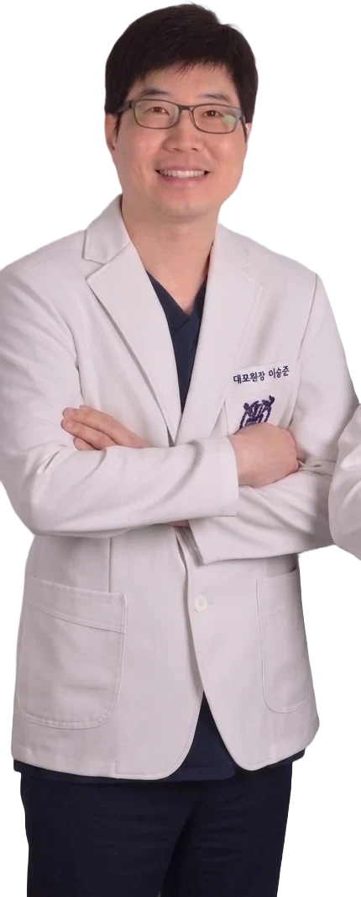
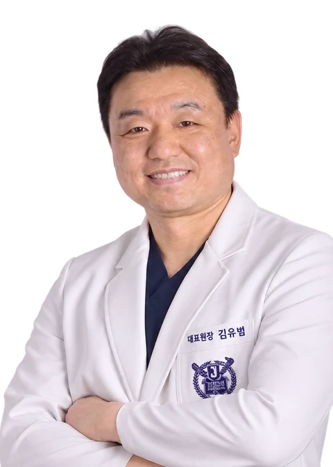

이승준 대표원장
서울대학교 출신
작은 불편함도 놓치지 않도록 증상과 구강 상태를 함께 살피는 진단을 지향합니다. 현재 상태와 치료가 필요한 이유를 설명하고, 환자분이 치료 과정을 이해하신 뒤 계획을 세웁니다.
서울S치과의원은 안산시 단원구 예술대학로 11에 위치한 치과입니다. 서울대학교 출신 이승준·김유범 대표원장 2인이 상담과 진단, 치료와 사후관리에 직접 참여합니다.

서울대학교 출신
작은 불편함도 놓치지 않도록 증상과 구강 상태를 함께 살피는 진단을 지향합니다. 현재 상태와 치료가 필요한 이유를 설명하고, 환자분이 치료 과정을 이해하신 뒤 계획을 세웁니다.

서울대학교 출신
자연치아를 보존할 수 있는 방법부터 검토합니다. 구강 상태와 생활 습관을 고려해 치료 방향을 설명하고, 치료 후에도 관리 방법을 함께 안내하는 진료를 지향합니다.
임플란트 상담과 치료 과정, 보철 재료와 제작 과정, 턱관절 증상과 진료 과정을 각 상세 페이지에서 확인하실 수 있습니다.
불편한 부위와 증상이 시작된 시점, 이전 치과 치료 내용, 복용 중인 약을 정리해 오시면 상담에 도움이 됩니다.
치료가 필요한 이유와 다른 선택지, 예상 과정, 사후관리까지 궁금한 내용을 말씀해 주세요. 설명을 듣고 계획을 정하실 수 있도록 안내합니다.
경기도 안산시 단원구 예술대학로 11 4층 · 0507-1320-2879
월·화·목·금 10:00~19:00 / 수 10:00~20:00 / 토 10:00~14:00
평일 점심시간 13:00~14:00 · 토요일 점심시간 없음 · 일요일·공휴일 휴진
의료진 소개와 진료 철학은 서울S치과 공식 네이버 블로그의 의료진 소개를 바탕으로 정리했습니다.